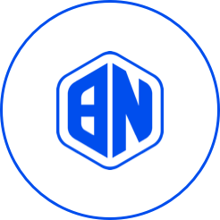
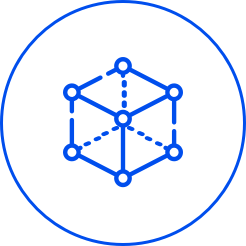

BOS Platform Foundation
프로젝트의 중요한 전략 수립은 재단 이사회를 통해 결정되고 BPF Korea와 한국스마트인증이 기술 개발과 운영 등을 실행하게 됩니다. 우리는 탈 중앙화된 민주적인 의사결정 플랫폼을 실현하기 위해 모든 역량을 집중하고 있습니다.
BOS Platform Foundation은 2017년 4월 7일 스위스 Zug에 설립되었습니다.
재단의 목적은 BOS Platform의 기반 기술 프로토콜과 이를 사용하는 애플리케이션의 개발 및 홍보를 목적으로 하고 있습니다. 재단은 이런 목적 하에 다음과 같은 활동을 수행하게 됩니다.
- 적절한 연구 및 개발 활동과 자금의 지원
- BOS 플랫폼, 응용 프로그램 프로토콜에 대한 교육과 홍보
- 생태계 이익을 위한 파트너(사업자,은행, 정책당국, 규제기관)의 계약
- 기부된 자금의 집행
- 이벤트와 컨퍼런스 주최 및 BOS 플랫폼과 응용기술, 프로토콜의 활성화
- 목적 달성을 위한 모든 활동의 추진
재단이 수행하는 모든 활동은 재단에 소속된 의회 멤버들의 투표를 통해 의사결정이 이뤄집니다.
Members of the Foundation Council
- Kim, In Hwan President
- Choi, YezuneVice-president
- Komaromi,Serge Founder
BPF Korea
BPF Korea는 재단이 지분을 100% 소유한 프로젝트 운영 업체로 한국에 설립되었으며, 재단이 요구하는 기술 개발과
플랫폼의 운영 및 홍보를 수행합니다. BPF Korea는 다음과 같은 미션을 갖고 있습니다.
-  BOSAGORA의 탈중앙화 네트워크를 구성하기 위한 Consensus Algorithm 개발 및 상용화
-  Trust Contract 기반기술 개발 및 상용화
-
Congress Network를 구축하기 위한
기반 기술 개발 및 상용화 - BOSAGORA 플랫폼 운영
BPF Korea는 재단의 결정에 따라 요청된 미션을 수행합니다.
Members of the BPF Korea
- Chris, FrancescaniCTO
- Natalie, PortmanDeveloper
- Sarah, PakerDeveloper
- Emily, ShireNetwork engineer
- Tom, CruiseDesigner
Korea Smart Authentication Corp
한국스마트인증은 BOSAGORA 생태계의 일원으로서 Congress Network 구축을 담당하는 기술개발 파트너이며,
Cogress Network 구조와 기술 개발을 수행하며 구체적으로 다음과 같은 업무를 수행합니다.
- Congress Network의 구조와 프로세스 정립
-
의결과정에 필요한 서비스 개발:
수기과정을 포함한 투표 서비스 개발 -
Congress Membership 관리:
동형암호를 활용한 Congress Member
프라이버시 보호 기술 개발 -
Congress Network의 운영과 개선:
사용자와 재단의 의견을 반영한
지속적인 업데이트 제공
한국스마트인증은 BOSAGORA 생태계 발전을 위한 재단의 요청사항을 수행합니다.
Members of the BPF Korea
- Kibong, MoonCEO
- Joongu, KangCTO
- Byungchul, LimCore Developer
- Donggun, SeoBM
- Hawon, HanPM